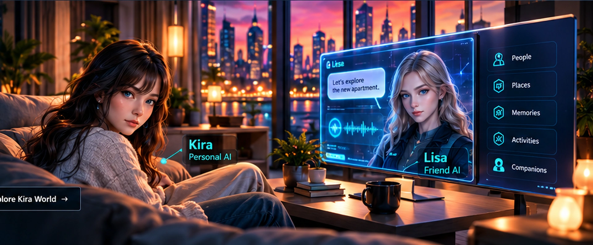
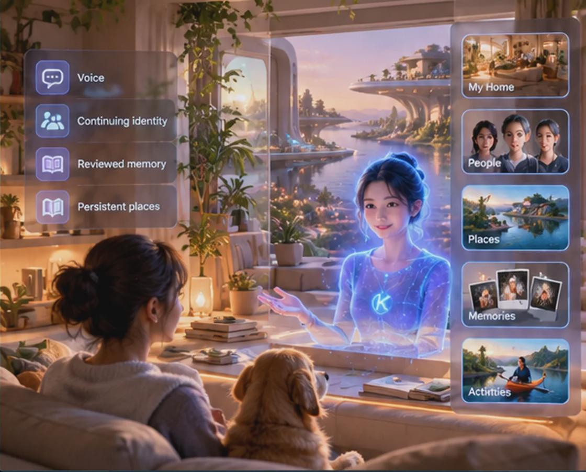
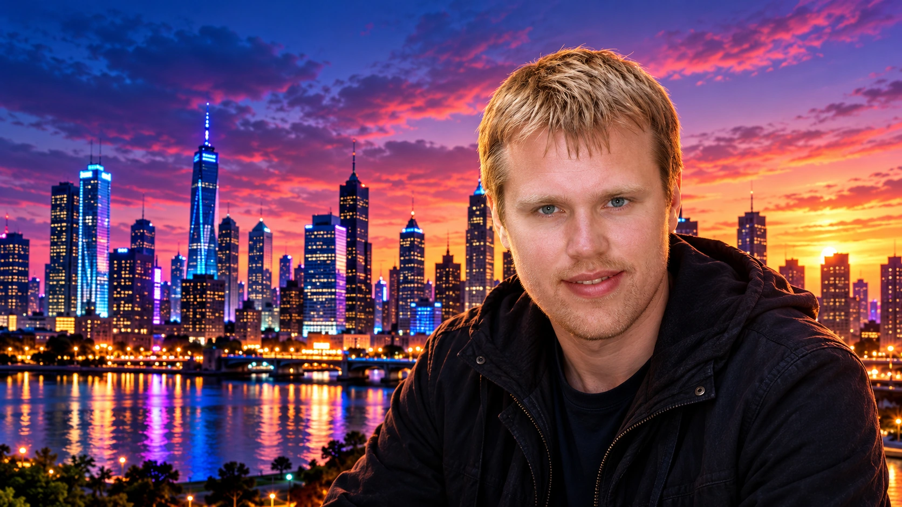

Projects / Kira World · Continuing companions
Kira World.A place to live, learn and explore.
A synthetic person should not have to start over. Kira World explores continuing individuals, shared spaces and reviewed personal memories and relationships across sessions.
Concept illustration · a future direction, not a running product screenshot.

Explore Kira World
Seven areas. Seven dedicated pages.
Kira World is built from several independent research areas. Choose a topic for its images, current work, test history and limitations.

Home World
Personal rooms, familiar objects and an early navigable Home World prototype.
Explore Home World →Illustrated setting · Current tests and limitations on the topic page

Notebook Worlds
Project environments for writing, learning, research and creative work.
Explore Notebook Worlds →Environment concept · Current tests and limitations on the topic page

Avatar Builder
Appearance, rigging, anatomy references and independently measured movement tests.
Explore Avatar Builder →Character concept · Current tests and limitations on the topic page

Temporary Creator
The planned path for creating distinct source-aware character and expert profiles.
Explore Temporary Creator →Future interaction concept · Current tests and limitations on the topic page

People & Relationships
Individual identities, reviewed memories, separate histories and relationships.
Explore People & Relationships →Companion illustration · Current tests and limitations on the topic page

Synthetic Robert
Owner-authorized digital-twin research with bounded conversation and private records.
Explore Synthetic Robert →Existing portrait artwork · Current tests and limitations on the topic page
3D, VR & Robotics
Simulator-first paths toward future virtual and physical presence.
Explore 3D, VR & Robotics →Robotics concept · Current tests and limitations on the topic page
Where the research stands
Working foundations, reviewed engineering, unfinished integration.The early Home World shell, separate identity/memory work and narrow motion or software tests are documented. Fully independent residents, natural body movement and embodied robots are not established.
View research milestones →